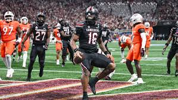

Dutch Fork Defeats Irmo In a Shootout!
The top ranked Dutch Fork Silver Foxes win 56–50 against 3rd ranked Irmo. In a game
that went down to the wire, the experienced offense of Dutch Fork broke out in the
final quarter to secure overtime. Led by junior quarterback Jaxon Knott’s 437 passing
yards and 5 touchdown passes, the offense was clicking on all cylinders...
Coach Dawn Staley Cashes In! New Contract For the Gamecock Legend
The Gamecocks women’s basketball coach signs an extension through the 2030 season worth
over $25 million. Since 2008, Staley has built a powerhouse, bringing 3 championships
to Columbia and cementing herself as a legend.
Gamecocks Football Wins Much Anticipated Season Opener VS Virginia Tech

After a long offseason of waiting, the Gamecocks took the field last night in their
first game of the season. With high expectations after last year’s run, fans were not
disappointed in the season opener, defeating Virginia Tech 24–11.